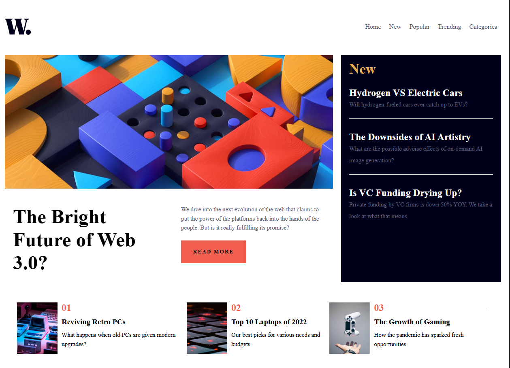
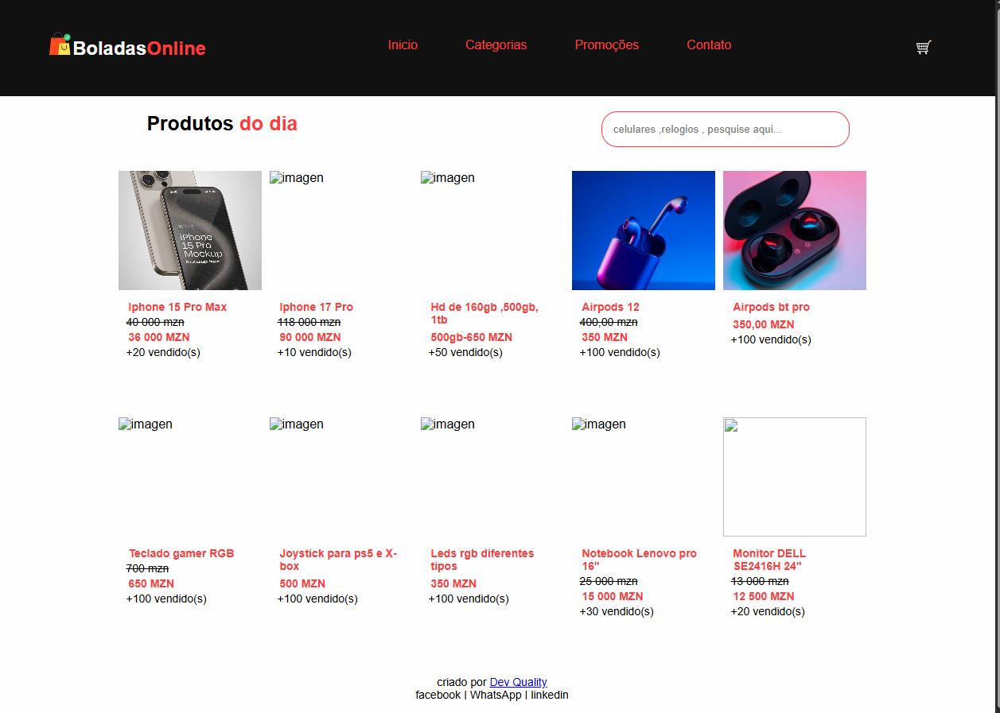
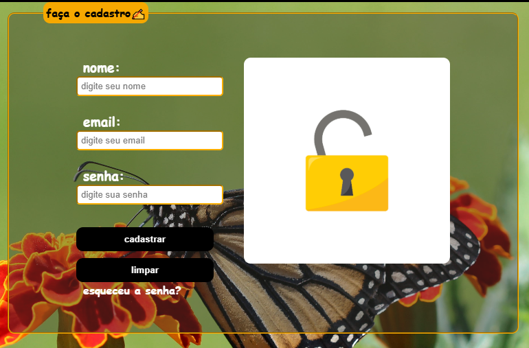
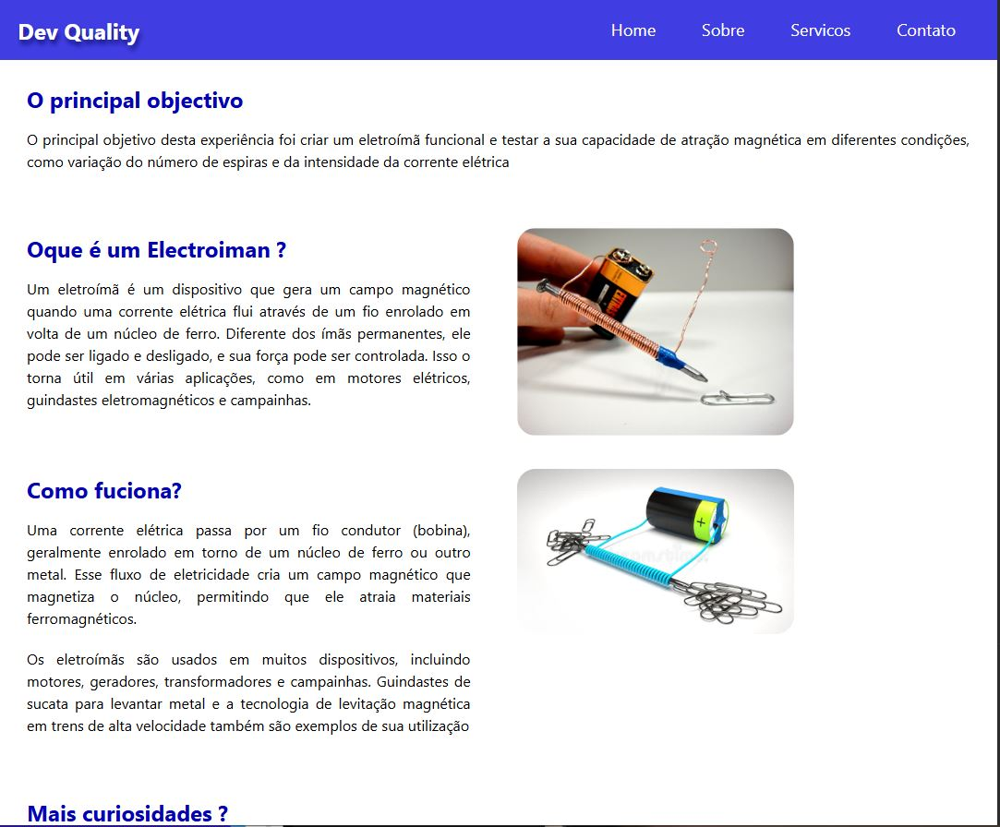

Projetos Relevantes

Este projecto foi um trabalho final do meu trajecto em programacao web , onde foi selecionado ou escolhido um site no frontend.io e tinha uma missao de fazer uma pagina parecida ou identica...
ver mais
Este projecto me ajudou a saber a dimensionar as imagens de forma responsavel , usar os tipos e tamanhos de fontes , sem faltar as tecnologias Flrebox e Grid Layout.

informacao

informacao

informacao